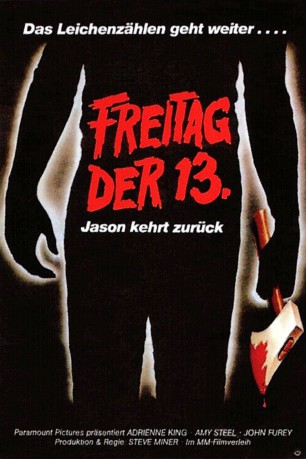
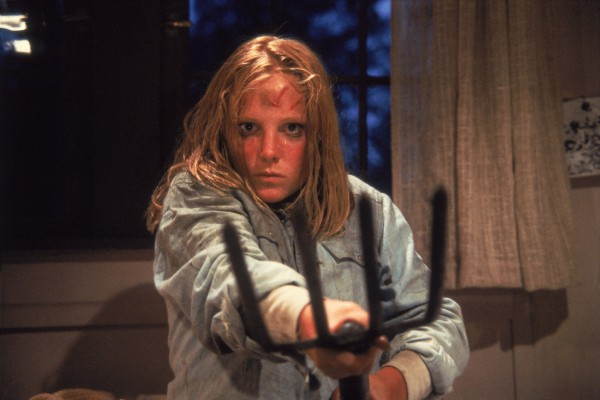
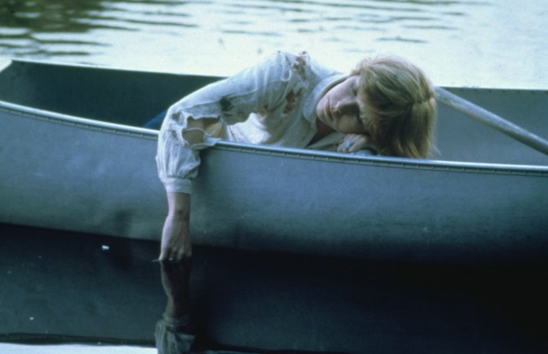
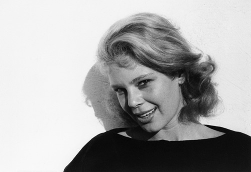

#4083 Freitag, der 13. - Teil 02 - Jason kehrt zurück
Alternativ: Friday the 13th Part 2
 
 IMDB-Wertung: 6.1 / 10
IMDB-Wertung: 6.1 / 10  Metascore: 0
Metascore: 0 
Nach dem Mord an der verrückten Mrs. Voorhees, die den Tod ihres Sohnes Jason rächte, kann Alice wieder ruhig schlafen. Aber da gibt es noch ein kleines Problem: Jason ist gar nicht im Crystal Lake ertrunken, sondern lebt die ganze Zeit in den Wäldern in der Umgebung. Und er hat beobachtet, wie Alice seine Mutter tötete. Seine Rache nimmt ihren blutigen Lauf.
Jahr: 1981
Dauer: 86 Minuten
FSK: 16
Land: USA Studio: Paramount PicturesTonspuren:
Untertitel: Deutsch, Englisch, Französisch, , , , , , , ,
Auflösung: 1080p (1920x1080) Größe: 8396 MB
Genre: Horror, Mystery, Thriller
Regisseur:  Steve Miner
Steve Miner
Drehbuch: Roger Planchon
Soundtrack:
Darsteller:
-  Amy Steel als Ginny
- John Furey als Paul
-  Adrienne King als Alice
- Warrington Gillette als Jason
- Russell Todd als Scott
-  Betsy Palmer als Mrs. Voorhees
 Steve Dash als Jason Stunt Double
Steve Dash als Jason Stunt Double- Karen A. Brown als Dancer in bar , uncredited
 Rex Everhart als Enos - Tow Truck Driver , uncredited
Rex Everhart als Enos - Tow Truck Driver , uncredited- Ari Lehman als Jason as Child , uncredited
- Kirsten Baker als Terry
- Stuart Charno als Ted
 Walt Gorney als Crazy Ralph
Walt Gorney als Crazy Ralph- Marta Kober als Sandra
- Tom McBride als Mark
- Bill Randolph als Jeff
- Lauren-Marie Taylor als Vickie
- Cliff Cudney als Max
- Jack Marks als The Cop
- Jerry Wallace als The Prowler
- David Brand als Extra Counselor
- China Chen als Extra Counselor
- Carolyn Louden als Extra Counselor
- Jaime Perry als Extra Counselor
- Tom Shea als Extra Counselor
- Jill Voight als Extra Counselor
- Peter Brouwer als Steve Christy , uncredited
- Ronn Carroll als Sgt. Tierney , uncredited
- Robbi Morgan als Annie , archive footage, uncredited
Datei: X:\FSK18-Collections\Freitag, der 13\Freitag, der 13. - Teil 02 - Jason kehrt zurück (1981, FSK16, 1920x1080).mkv seit 19.07.2016
Festplatte: FSK18
 Es gibt insgesamt 15 Filme in der Gruppe 'FSK18-Collections\Freitag, der 13'
Es gibt insgesamt 15 Filme in der Gruppe 'FSK18-Collections\Freitag, der 13'